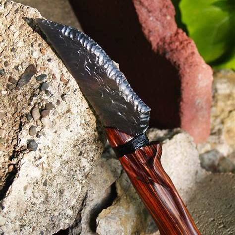
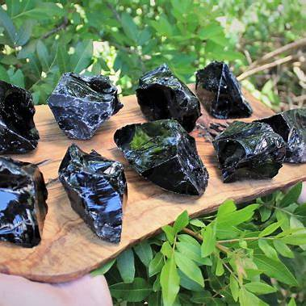

Obsidian History
Obsidian is a volcanic glass used for thousands of years. Ancient people made tools, weapons, and jewelry from it. Mesoamericans used it for rituals and sharp sacrificial blades. Today, it is used in art, jewelry, and medical tools.
Real-Life Applications
Obsidian was traded across ancient civilizations for its sharpness. It was found in volcanic regions worldwide and highly valued. People carved it into mirrors, arrowheads, and ceremonial items. Its strength and beauty keep it useful in modern times.
